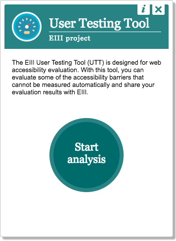

Hoe tools
digitale toegankelijkheid
veranderen

Wilco Fiers
Deque Systems
aXe Product manager

Vele hoedjes
Auto-WCAG Chair
Deque rep in EUs WADEX-group
ACT Taskforce facilitator
Expertgroep DigiToegankelijk
Hoe tools digitale toegankelijkheid veranderen
Nieuwe generatie tools
Standaardisatie
Wat tools kunnen, vandaag en morgen
Vragen
Accessibility Tools
Er is een explosie geweest van tools in digitoegankelijkheid
WCAG Tools Explosie
De grote integratie race
Browser plugins
Bookmarklets
SAAS
Test frameworks
Command line tools
Online platforms
WYSIWIG editors
Desktop apps
...
QA Support Tools
https://www.accessiblecheck.com/

De grote verschillen
Tools geven zelden hetzelfde antwoord
DigiToegankelijk.nl

SiteImprove
HTML CodeSniffer
User Test Tool
aXe Devtools
Waarom de verschillen
False positives
Bewuste afwijkingen
Verschil in interpretatie
False positives
Een onvoorziene situatie die leidt tot fout keuren van iets dat niet fout is.
Voorbeeld: Een <img /> zonder alt die verborgen is.
Bewuste afwijkingen
Een bekende uitzondering die niet in de tool is ingebouwd, vaak omdat dit niet te automatiserne is.
Voorbeeld: Alternatieve kleuren op een website.
Verschil in interpretatie
Wanneer experts het niet met elkaar eens zijn.
Voorbeeld: Een pagina zonder <h1>
Expert tests
Niet alleen tools hebben dit probleem.
Ook experts zijn het slechts 75% van de tijd eens.
Consquenties
Verschillen worden ineens pijnlijk zichtbaar
De vijf fases van WCAG vergelijken:
Ontkenning: Ligt het aan mij? Doe ik het goed?
Verwarring: Is dit echt ontoegankelijk?
Boosheid: Jullie weten niet wat je doet!
Depressie: Ik kan het nooit goed doen.
Acceptatie: ... Hopelijk?
Standaarden
Doelen
Testverschillen verkleinen
Duidelijkheid scheppen
Van elkaar leren
Auto-WCAG
W3C Community Group
(open voor iedereen)
Bezig sinds 2014
20 gepubliceerde regels
Accessibility Conformance Testing
W3C Taskforce
Werkt aan standaard test regels
Werkt aan test case repository
Wat tools kunnen
Tekstalternatieven en accessible names
Correct ARIA gebruik
Correcte structuur (tables, lists, title)
Zoom, auto-refresh
Kleurcontrast
... en meer
Doelen voor de toekomst
Dynamische content testen
Teksten en afbeeldingen herkennen
Integreren met expert tests
Integreren met CI
Test ook zelf!
25 - 50% van alle problemen
0 criteria volledig automatisch